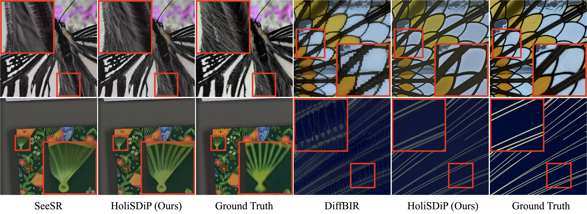
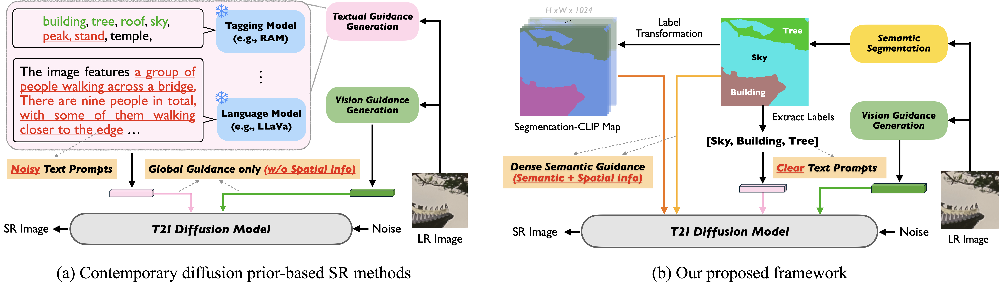
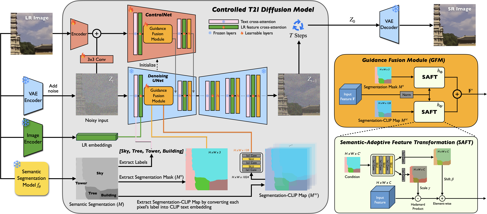
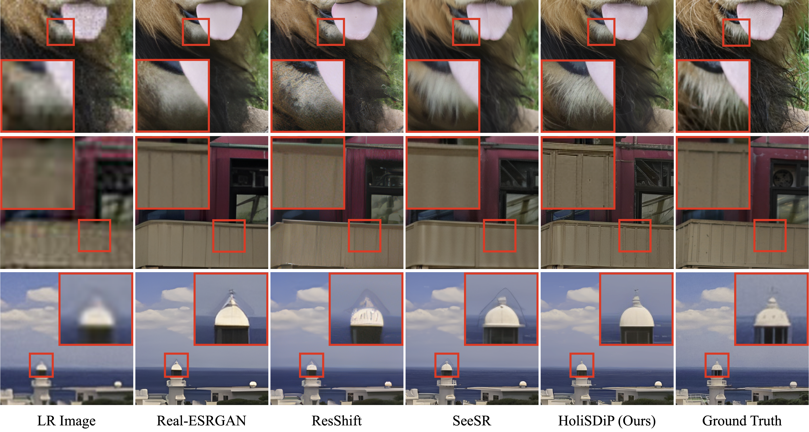

The proposed HoliSDiP performs well against the contemporart real-world image super-resoltion frameworks by offering precise and multi-scale semantics, guiding the text-to-image diffusion model to synthesize high-quality images with fine details.
Abstract
Text-to-image (T2I) diffusion models have emerged as powerful priors for real-world image super-resolution (Real-ISR). However, existing methods may produce unintended results due to noisy text prompts and their lack of spatial information. In this paper, we present HoliSDiP, a framework that leverages semantic segmentation to provide both precise textual and spatial guidance for diffusion-based Real-ISR. Our method employs semantic labels as concise text prompts while introducing dense semantic guidance through segmentation masks and our proposed Segmentation-CLIP Map. Extensive experiments demonstrate that HoliSDiP achieves significant improvement in image quality across various Real-ISR scenarios through reduced prompt noise and enhanced spatial control.

Method
(a) The segmentation model first processes the LR image to generate segmentation results, which is then used for extracting semantic labels, segmentation mask, and Segmentation-Clip Map (SCMap).
(b) The semantic labels are used as text prompts to inject textual guidance through cross-attention layers.
(c) The segmentation mask and the proposed Segmentation-CLIP Map supply dense semantic guidance, integrated by our Guidance Fusion Module to facilitate semantic-adaptive feature transformation, where distinct transformations are applied to different semantic regions conditioned on class priors.
(d) ControlNet and LR cross-attention layers are utilized to strengthen guidance from the LR image. These conditions are incorporated into the denoising UNet, which iteratively refines the noisy input to produce the final SR image.

More Qualitative Results
The proposed HoliSDiP presents sharper details without introducing noticeable visual artifacts across various Real-ISR scenarios.
